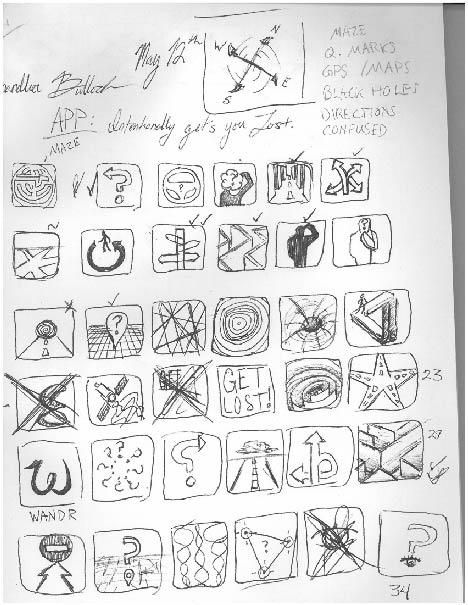
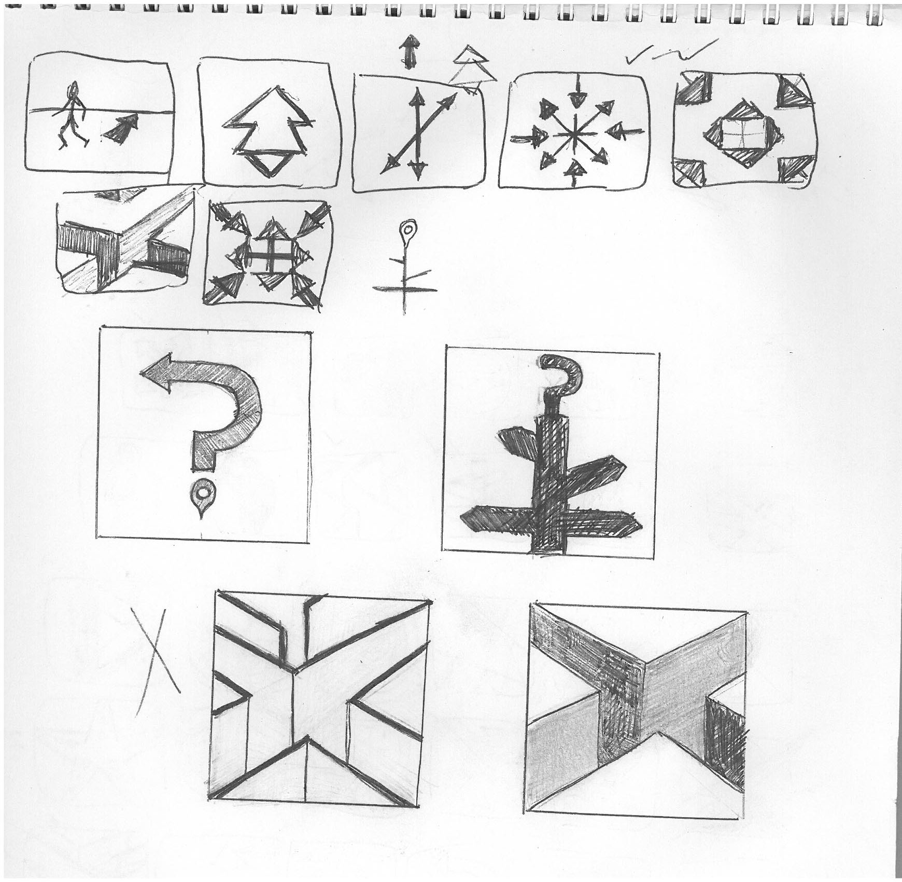

Logo design for app that gets you lost
Objective
This project was completed while I attended SFU for their Interactive Arts and Technology Program. The goal was to iteratively create and refine a logo for a random app idea. The idea I chose was a map app that would purposefully get the user lost.
My Role
This was a solo project, but I had lots of constructive input from my instructors and peers.
Skills
- Adobe Photoshop
- Ideation
Process
This endeavor started with ideation. I brainstormed associated words and then sketched related images.
I then iterated on my best sketches and refined them more.
The next step was to design a logo without color, and to critique it at smaller sizes. This allowed clarity to be the primary design goal. It became quickly obvious if the idea was too complex.
Remarks
The colors I used here were blue and beige, which I associated with maps. The red of the marker seemed like the most common coloring of the location marker, and added mor vibrancy to the logo. This was a completely new process and skillset to me at the time, and I learned a lot about effective design process with this project. Logo design is still probably something I'm quite weak at, but this exercise was very valuable in giving me a design vocabulary to work with.